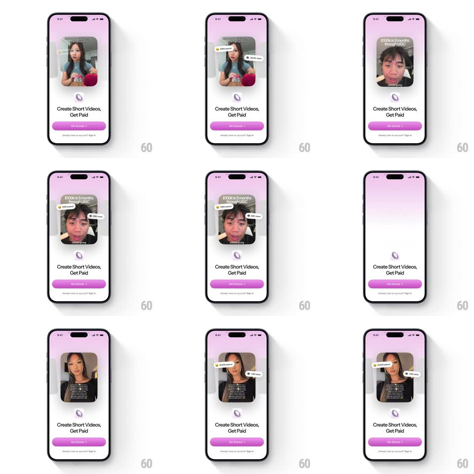

Media
Frame-by-frame

Rebuild this animation 1:1: Methods' intro carousel - a creator video card slides in and stat badges ($4,010 earned, 80K views, $100k in 5 months) spring-pop out from its sides one by one.

Rebuild this animation 1:1: Methods' intro carousel - a creator video card slides in and stat badges ($4,010 earned, 80K views, $100k in 5 months) spring-pop out from its sides one by one.
## Integration
Integration: stack-agnostic spec - springs given as stiffness/damping, timed motions as duration + curve; map every value to your framework and animation library of choice.
## Scene
A light onboarding screen: the Methods logo mark, the headline "Create Short Videos, Get Paid", a pink Get Started button, and an "Already have an account? Sign In" line. Center stage: a rounded video card of a creator, overlaid with floating stat chips ("$100k in 5 months through UGC", "$4,010 earned", "80K views").
## Motion spec
Pattern: video card entrance with staggered springy stat badges.
- The card slides in from the right (translateX 60 -> 0, spring ~300/18, ~450ms) and settles with a 2deg tilt relaxing to 0.
- Then the badges pop from behind the card's edges, staggered 150ms apart: each scales from 0 with a big spring (~350/11, scale 0 -> 1.25 -> 1) and drifts 10px outward into its float position.
- After landing, each badge idles with a gentle float (+/-4px vertical, offset phases, 2.8s loops).
- The headline and Get Started fade up beneath (12px rise, 300ms) once the last badge lands.
- Between carousel pages the card and badges sweep out left (300ms) and the next creator's card replays the same entrance with fresh stats.
## Calibration
- Badges emerge from behind the card (masked by its edge), then overshoot outward - they are earned pops, not fades.
- Each badge carries an icon (coin, eye) matching its metric - earnings vs views never share a glyph.
## Reduced motion
Card fades in; badges fade at their final positions (200ms each, staggered).
## Don't miss
- The biggest claim ("$100k in 5 months through UGC") rides on the card itself as a caption strip - the floating chips are the smaller proofs.
- Sign In stays a quiet text link under the button - never a second button.